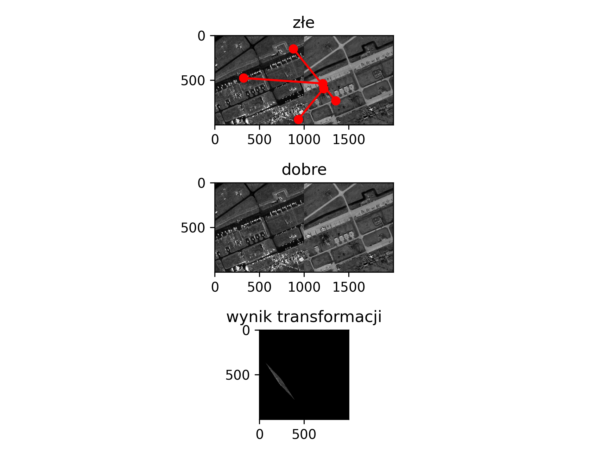
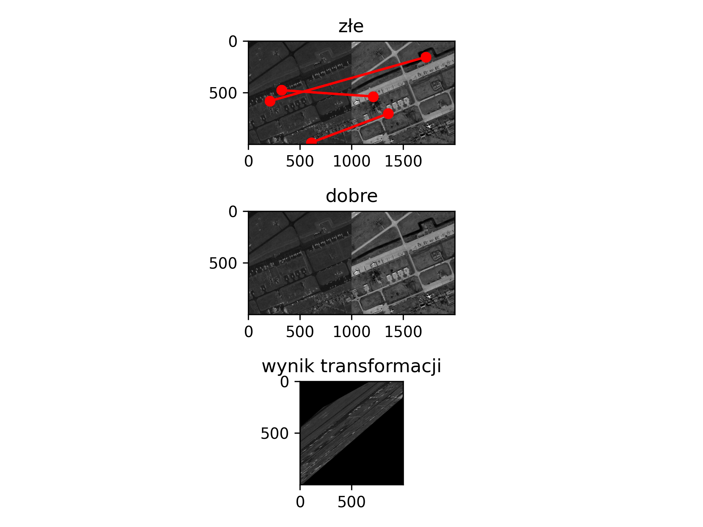
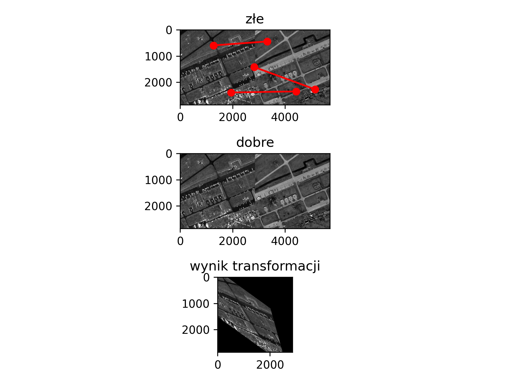
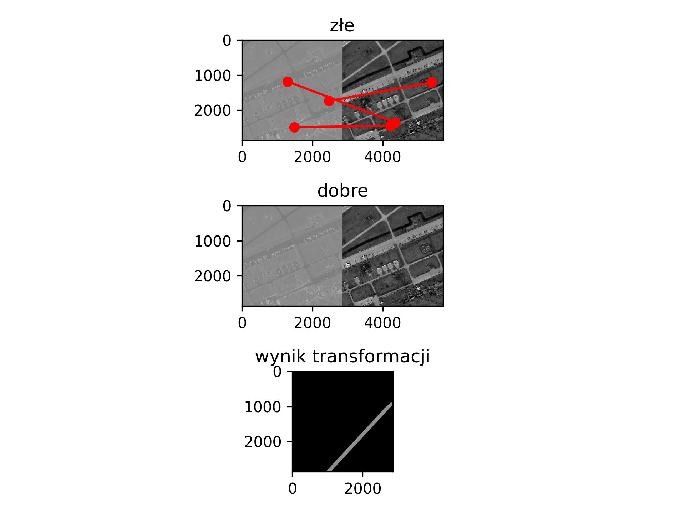
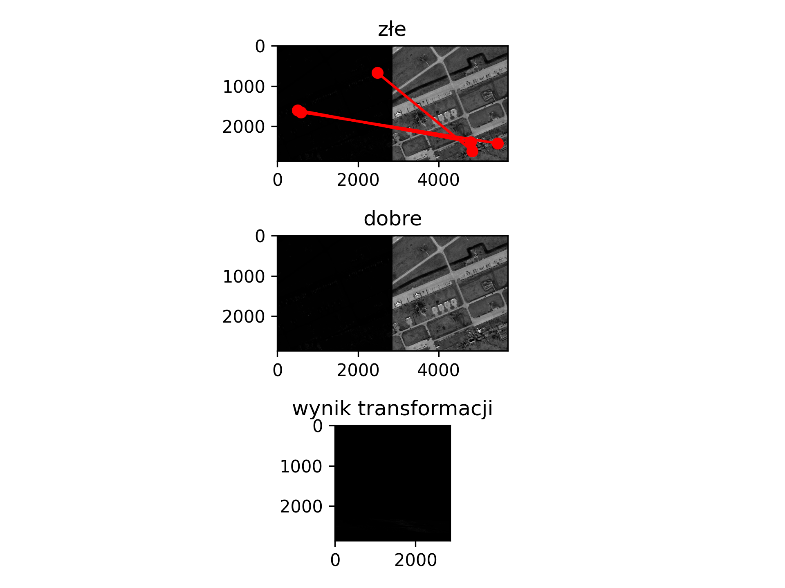

Detect SIFT time: 0.013824939727783203
FLANN initial time: 8.130073547363281e-05
FLANN Maching time: 8.130073547363281e-05
Ratio test time: 3.6716461181640625e-05
Liczba dobrych dopasowañ: 0
RANSAC_init_time: 3.6716461181640625e-05
Detect SIFT time: 0.006163120269775391
FLANN initial time: 6.175041198730469e-05
FLANN Maching time: 6.175041198730469e-05
Ratio test time: 2.4080276489257812e-05
Liczba dobrych dopasowañ: 0
RANSAC_init_time: 2.4080276489257812e-05
Detect SIFT time: 0.005734920501708984
FLANN initial time: 2.574920654296875e-05
FLANN Maching time: 2.574920654296875e-05
Ratio test time: 1.1444091796875e-05
Liczba dobrych dopasowañ: 0
RANSAC_init_time: 1.1444091796875e-05
Detect SIFT time: 0.3353304862976074
FLANN initial time: 3.266334533691406e-05
FLANN Maching time: 3.266334533691406e-05
Ratio test time: 0.0011138916015625
Liczba dobrych dopasowañ: 25
RANSAC_init_time: 0.0011138916015625
RANSAC_model_time: [[ 1.51679075e-01 -1.79598304e-01 2.45860987e+02] [ 2.35184135e-01 -1.88128098e-01 5.50354413e+02]]
RANSAC_model_time: 0.0011138916015625
Norm/SAR_URRC_SUB_1m_['gray', 'log', 'bad'] -> Norm/EO_URRC_SUB_1m_gray
N corr: 4Detect SIFT time: 0.3415827751159668
FLANN initial time: 3.314018249511719e-05
FLANN Maching time: 3.314018249511719e-05
Ratio test time: 0.0006756782531738281
Liczba dobrych dopasowañ: 17
RANSAC_init_time: 0.0006756782531738281
RANSAC_model_time: [[ -2.7433055 1.82683771 224.58578723] [ 2.37528673 -1.00858432 250.58052275]]
RANSAC_model_time: 0.0006756782531738281
Norm/SAR_URRC_SUB_1m_['gray', 'log', 'bad'] -> Norm/EO_URRC_SUB_1m_gray
N corr: 6Detect SIFT time: 0.2838268280029297
FLANN initial time: 3.9577484130859375e-05
FLANN Maching time: 3.9577484130859375e-05
Ratio test time: 1.6450881958007812e-05
Liczba dobrych dopasowañ: 0
RANSAC_init_time: 1.6450881958007812e-05
Detect SIFT time: 2.795738935470581
FLANN initial time: 3.8623809814453125e-05
FLANN Maching time: 3.8623809814453125e-05
Ratio test time: 0.015935420989990234
Liczba dobrych dopasowañ: 59
RANSAC_init_time: 0.015935420989990234
RANSAC_model_time: [[ 1.06119782e+00 2.16063728e-01 -1.01177259e+03] [ 7.63455566e-01 7.75595854e-01 -9.90389004e+02]]
RANSAC_model_time: 0.015935420989990234
Norm/SAR_URRC_SUB_035m_['gray', 'log', 'bad'] -> Norm/EO_URRC_SUB_035m_gray
N corr: 5Detect SIFT time: 2.2108066082000732
FLANN initial time: 6.079673767089844e-05
FLANN Maching time: 6.079673767089844e-05
Ratio test time: 0.0005908012390136719
Liczba dobrych dopasowañ: 16
RANSAC_init_time: 0.0005908012390136719
RANSAC_model_time: [[ 9.98496323e-01 -2.58549089e-01 5.13445266e+02] [-1.07909916e+00 2.25865723e-01 3.48383774e+03]]
RANSAC_model_time: 0.0005908012390136719
Norm/SAR_URRC_SUB_035m_['gray', 'log', 'bad'] -> Norm/EO_URRC_SUB_035m_gray
N corr: 3Detect SIFT time: 2.1377010345458984
FLANN initial time: 4.1961669921875e-05
FLANN Maching time: 4.1961669921875e-05
Ratio test time: 0.00017404556274414062
Liczba dobrych dopasowañ: 7
RANSAC_init_time: 0.00017404556274414062
RANSAC_model_time: [[ 3.40646077e+00 7.26196446e+00 -1.13696022e+04] [ 2.19613197e-01 2.35097209e-01 1.90610215e+03]]
RANSAC_model_time: 0.00017404556274414062
Norm/SAR_URRC_SUB_035m_['gray', 'log', 'bad'] -> Norm/EO_URRC_SUB_035m_gray
N corr: 3